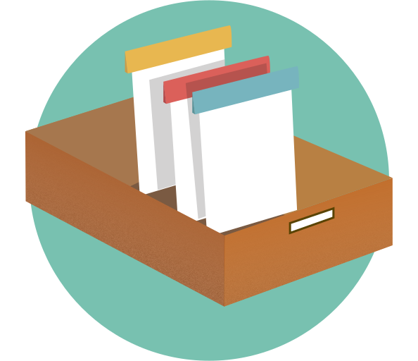
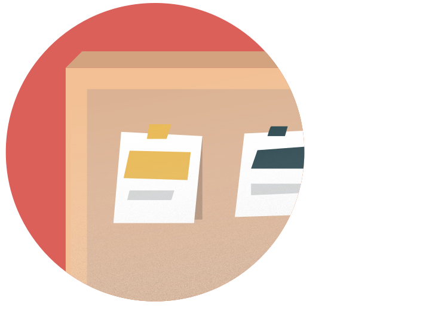

<header><mat-sidenav-container class="sidenav-container">
  <mat-sidenav #drawer class="sidenav" fixedInViewport="true"
      [attr.role]="(isHandset$ | async) ? 'dialog' : 'navigation'"
      [mode]="(isHandset$ | async) ? 'over' : 'side'"
      [opened]="!(isHandset$ | async)">
    <mat-toolbar><span>Boards</span></mat-toolbar>

    <mat-nav-list class="pad-left-10" >

      <a (click)="selectBoard($event,board.id,board.name)" mat-list-item *ngFor="let board of Board" >
        {{board.name}}
      </a>

      <div class='button-add-board'>
        <button (click)='openDialog()' mat-mini-fab color="primary" matTooltip="Add board" class='font25'>+</button>
        <span class='text-btn-add-board'>New Board</span>
      </div>
    </mat-nav-list>

  </mat-sidenav>
  <mat-sidenav-content class="bgwhite">
    <mat-toolbar color="primary">
      <button
        type="button"
        aria-label="Toggle sidenav"
        mat-icon-button
        (click)="drawer.toggle()"
        *ngIf="isHandset$ | async">
        <mat-icon aria-label="Side nav toggle icon">menu</mat-icon>
      </button>
      <span></span><a>Board's {{nameBoard}}</a>
      <!--<span class="spacer"></span>
      <a>Username</a>-->
    </mat-toolbar>

    <app-dashboard  [id_board]=board_select ></app-dashboard>

  </mat-sidenav-content>

</mat-sidenav-container></header>
